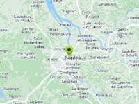

Example of custom marker system for NGUI.
Requirement: NGUI
Usage instructions:
Add this script to map GameObject.
Use NGUICustomMarkerSystemExample.AddMarker to create new marker.
Add this script to map GameObject.
Use NGUICustomMarkerSystemExample.AddMarker to create new marker.
NGUICustomMarkerSystemExample.cs
/* INFINITY CODE 2013-2016 */
/* http://www.infinity-code.com */
#if NGUI
using System;
using System.Collections.Generic;
using UnityEngine;
using System.Collections;
namespace InfinityCode.OnlineMapsExamples
{
[AddComponentMenu("Infinity Code/Online Maps/Examples (API Usage)/NGUICustomMarkerSystemExample")]
public class NGUICustomMarkerSystemExample : MonoBehaviour
{
private static List<NGUICustomMarkerExample> _markers;
private static NGUICustomMarkerSystemExample instance;
public Transform container;
public GameObject prefab;
public static List<NGUICustomMarkerExample> markers
{
get
{
if (_markers == null) _markers = new List<NGUICustomMarkerExample>();
return _markers;
}
}
public static NGUICustomMarkerExample AddMarker(Vector2 position)
{
GameObject go = Instantiate(instance.prefab) as GameObject;
go.transform.parent = instance.container;
go.transform.localScale = Vector3.one;
NGUICustomMarkerExample marker = go.GetComponent<NGUICustomMarkerExample>();
marker.position = position;
markers.Add(marker);
return marker;
}
private void OnEnable()
{
instance = this;
}
private void Start()
{
Vector2 position = new Vector2(0, 0);
AddMarker(position);
OnlineMaps.instance.OnMapUpdated += OnMapUpdated;
OnMapUpdated();
}
private void OnMapUpdated()
{
Vector2 tl = OnlineMaps.instance.topLeftPosition;
Vector2 br = OnlineMaps.instance.bottomRightPosition;
Rect rect = new Rect(tl.x, br.y, br.x - tl.x, tl.y - br.y);
if (rect.width < 0) rect.width += 360;
foreach (NGUICustomMarkerExample marker in markers)
{
Vector2 p = marker.position;
GameObject go = marker.gameObject;
if (!rect.Contains(p))
{
p.x += 360;
if (!rect.Contains(p))
{
if (go.activeSelf) go.SetActive(false);
continue;
}
}
if (!go.activeSelf) go.SetActive(true);
Vector2 screenPosition = OnlineMapsControlBase.instance.GetScreenPosition(p);
screenPosition.x -= Screen.width / 2;
screenPosition.y -= Screen.height / 2;
Vector2 buttonOffset = new Vector2(-marker.size.x / 2, 0);
marker.widget.SetRect(screenPosition.x + buttonOffset.x, screenPosition.y + buttonOffset.y, marker.size.x, marker.size.y);
}
}
}
}
#endifNGUICustomMarkerExample.cs
/* INFINITY CODE 2013-2016 */
/* http://www.infinity-code.com */
#if NGUI
using UnityEngine;
namespace InfinityCode.OnlineMapsExamples
{
[AddComponentMenu("Infinity Code/Online Maps/Examples (API Usage)/NGUICustomMarkerExample")]
public class NGUICustomMarkerExample : MonoBehaviour
{
public Vector2 position;
public Vector2 size = new Vector2(32, 32);
public UIWidget widget
{
get { return GetComponent<UIWidget>(); }
}
}
}
#endif